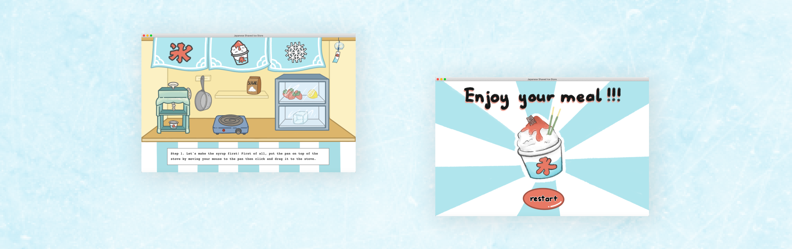
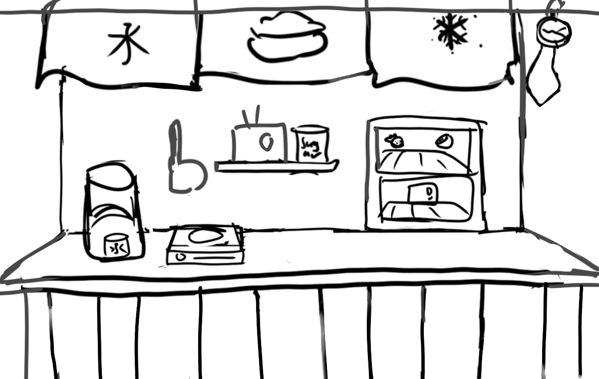

Kakigori
Visual Design / Simulation / Illustration / School Project
A monthly podcast series produced by students from SFU. Different guests are invited to talk about issues that affect our daily lives as students.

×

My Role
- Illustration
- Visual Design
- Programmer
Team
- Lacie Nguyen
Duration
- 3 week - Fall 2021
Project Overview
This project was from a Multimedia Programming for Art and Design course. It’s an individual project in which I have to design and code an interactive game demonstrating a process by letting users interact with it. As a person who loves Japanese culture, I decided to make a simulation that brings the user an experience of making a shaved-ice cup in a Japanese store during summer. I broke the project into three stages: brainstorming, illustrating and coding.
Ideation
I started by sketching the structures of my store. Sketching not only helps me plan the arrangements but also lets me visualize what I need to include in the interface.
After that, I made a storyboard to have a clear understanding of the user flow and what functions the code must have to create that interaction flow.
Ideation
I started the process by sketching and exploring different ways to replicate the feeling of a retro show in the design. Most of the sketches are heavily influenced by the Swiss design approach, which has large typography for the readability of small podcast previews on mobile devices.

Concept Refinement
After discussing with the marketing team, sketch 5 from the ideation was chosen because of its simplicity. One change I made was simplifying the graphical elements by changing the stars to the podcast icon. Therefore, the audiences can immediately tell this is a podcast by looking at the cover both on streaming platforms or on social media.

Implementation
Besides the podcast cover, I also need to design a promotional post on social media for it. I decide to reuse the podcast cover as the main page so the audiences can know and easily recognize the podcast when they find it on streaming platforms.

Reflection
The most interesting part of this project is learning to design for different media. Before doing this project, I only have experience in designing social media posts and printed products so designing a podcast cover is a new experience for me. I was able to research the dimension of podcast cover in different streaming platforms like Spotify or Apple Podcast as well as what should be included in a podcast cover.